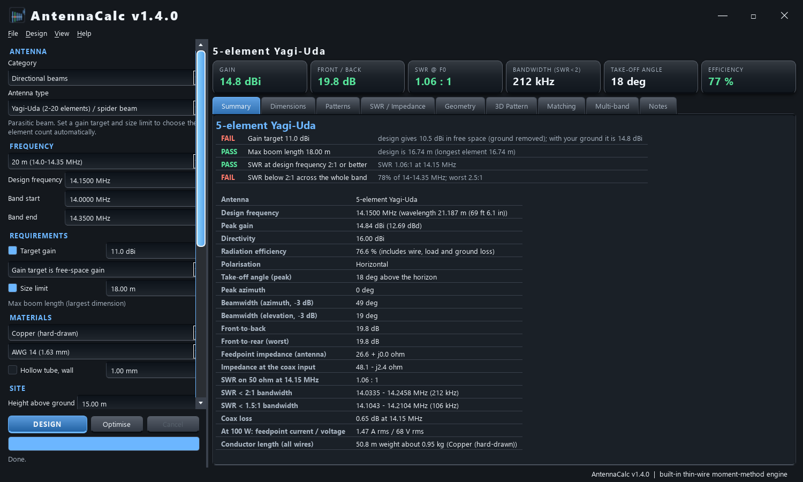
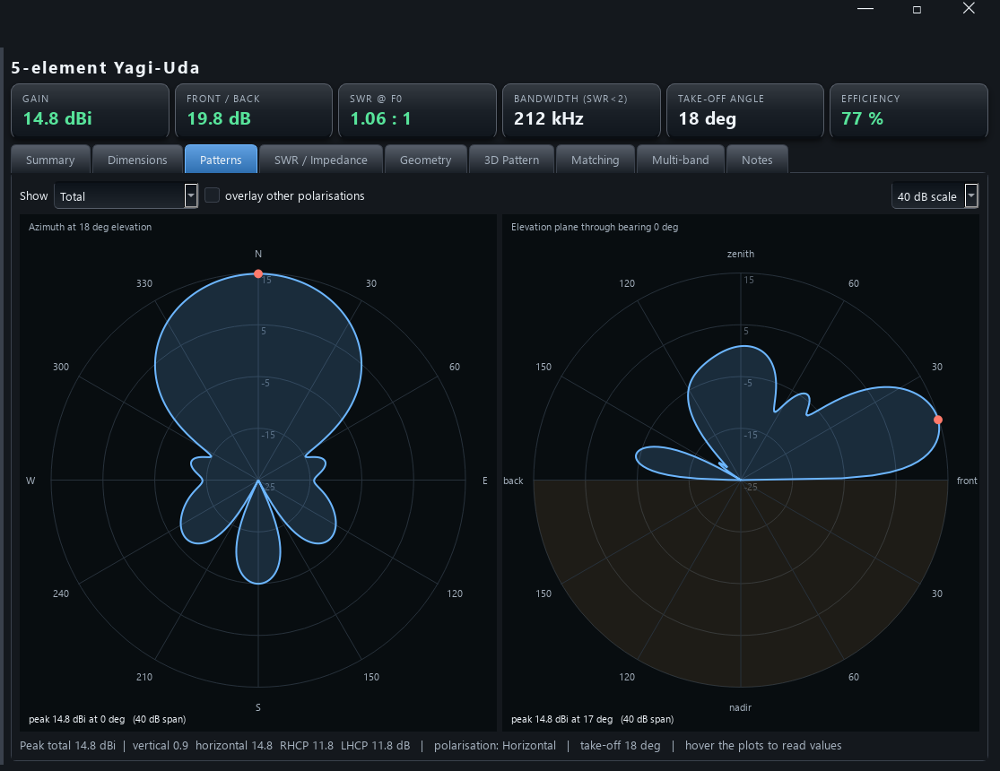
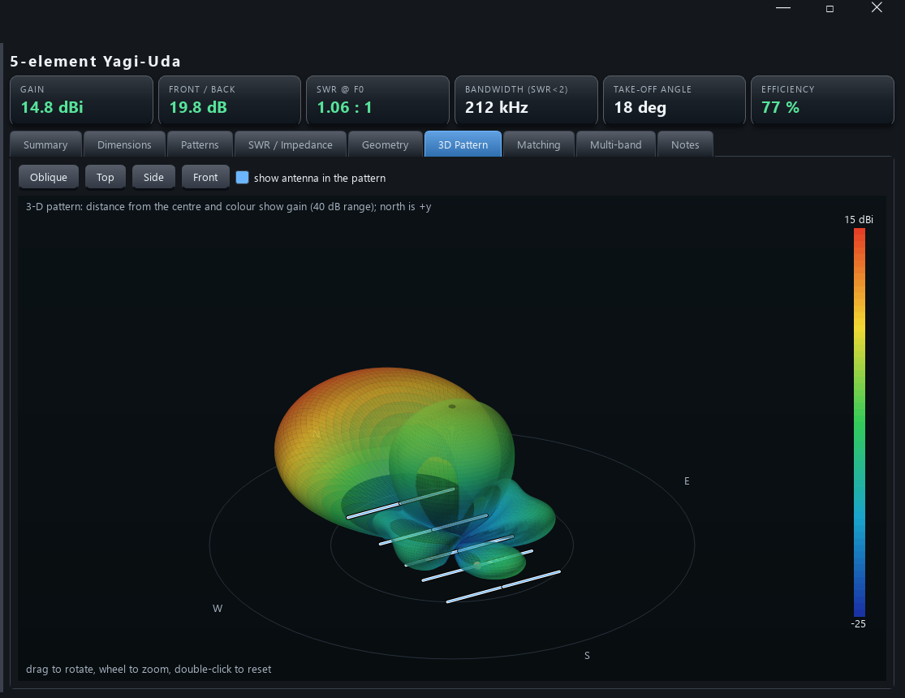
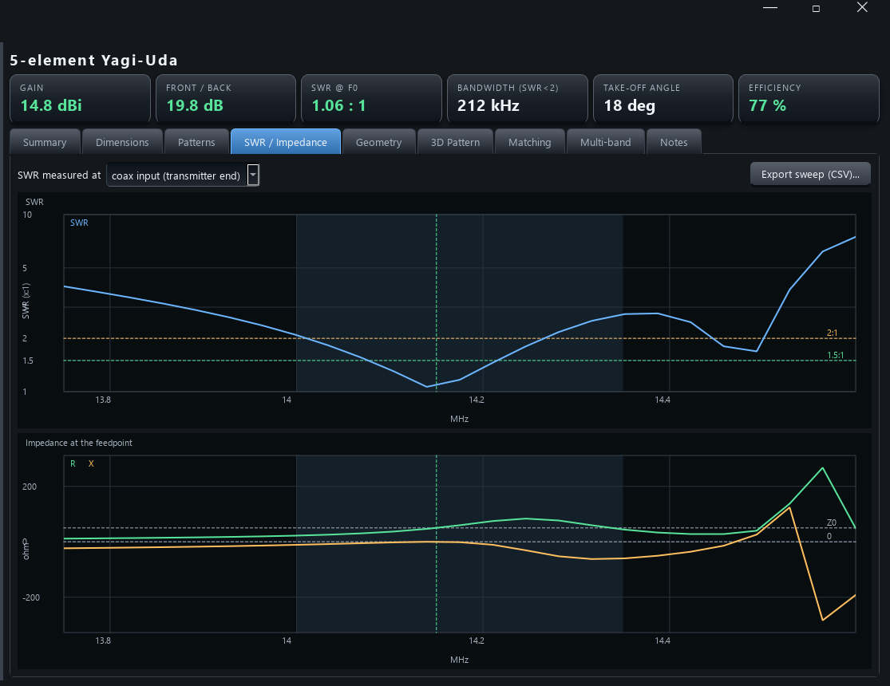
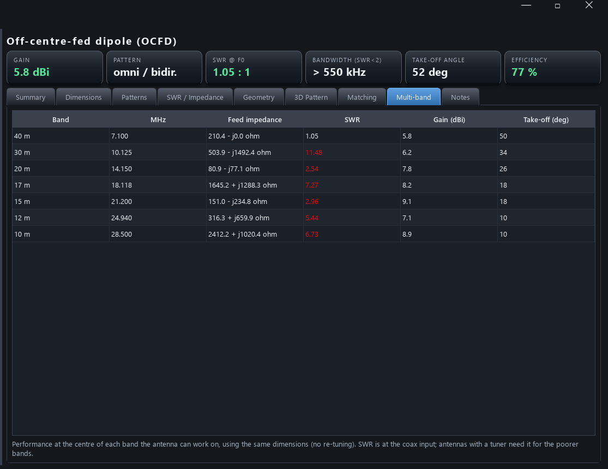

ANTENNACALC
Design amateur-radio antennas to your requirements: band, gain, size and materials.
Download for Windows Source on GitHub
What it does
50 designs
HF wires, verticals, beams, compact and loaded antennas, VHF/UHF/satellite, microwave and receive-only types, chosen from drop-downs.
HF wires, verticals, beams, compact and loaded antennas, VHF/UHF/satellite, microwave and receive-only types, chosen from drop-downs.
Real simulation
A built-in thin-wire moment-method solver gives impedance, SWR sweep, gain, patterns and ground effects for your exact dimensions and materials.
A built-in thin-wire moment-method solver gives impedance, SWR sweep, gain, patterns and ground effects for your exact dimensions and materials.
Gain target & size limit
Beams choose their own element count. Auto-tune to resonance and an optimiser for gain and front-to-back.
Beams choose their own element count. Auto-tune to resonance and an optimiser for gain and front-to-back.
Build-ready output
Cut list in metres and feet/inches with weight, matching network values, multi-band table, PDF report and NEC-2 export.
Cut list in metres and feet/inches with weight, matching network values, multi-band table, PDF report and NEC-2 export.
A look around




Download and use
Download the zip from Releases, unzip it anywhere and run AntennaCalc.exe. Nothing is installed and the program only looks on GitHub for a newer release (one small request, switch off in the Help menu). The User Guide PDF is in the zip. The exe is unsigned, so Windows SmartScreen may ask you to confirm.
Please note
Results are engineering estimates from simplified models; always trim on an antenna analyser. No warranty, not for safety-critical use, and antenna, mast and RF-exposure safety is your responsibility. See the full disclaimer. MIT licence. 73 de VK3EI.